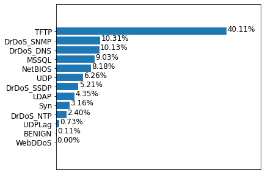

Automating AI lifecycle: the DDoS use case
Eros Zaupa
Project goals
- CICDDoS2019
- Discover this new dataset for DDoS attacks
- DNN
- Design and develop a classifier using the dataset
- Kubeflow
- Design and develop a ML pipeline for the DNN
CICDDoS2019
Proposed taxonomy

Dataset
- Raw data
- With network traffic and event logs
- CSV files
- More than 80 traffic features extracted from the raw data
Training dataset

Total number of records: 50,063,112
Testing dataset

Total number of records: 20,172,83
Datasets for DNN
 Training dataset
Training dataset
Testing dataset
DNN
Development
- Python 3.7.7
- pandas 1.0.3
- scikit-learn 0.23.1
- Tensorflow 2.1.0
Estimators

Tensorflow API stack
Estimator API

Schematic of Estimator
Design
- Network
- Dense, feed-forward neural network
- Multiclassification
- 8 classes
- Features
- 20 most useful features
- Batch normalization
- Adam optimizer
Hyperparameter tuning
- Number of hidden units
- [60, 30, 20]
- [60, 40, 30, 20]
- Dropout rate
- 0.1
- 0.2
- Learning rate
- 0.1
- 0.3
Kubeflow
Develoment
- Docker 18.09.7
- Kubernetes v1.15.3
- Kubeflow v1.0
- Kubeflow Pipeline SDK v1.0.0
Resources
- Master node
- 4 VCPUs, 8GB RAM, 100GB of storage
- 2 x Slave nodes
- 4 VCPUs, 16GB RAM, 100GB of storage
- OS
- Ubuntu 16.04 LTS
Pipelines

Components
- Base image
- All the shared dependencies
- Preprocess-train
- Training dataset + Source code
- Preprocess-test
- Testing dataset + Source code
- Train
- Source code
- Test
- Source code
Experiments

Behaviour
- Load is distribution
- Components are executed according to the available resources
- Failure
- If any node fails, the experiment is resumed as soon as the node is again available
Results
Solution 1

Solution 2a

Solution 2b

Performance

Timing

Comments
- Significant reductions in times with concurrency
- Small overhead on component initialization and management
- Pipeline implementations are overall slower than the notebook
execution
- Warning
- Your CPU supports instructions that this TensorFlow binary was not compiled touse: SSE4.1 SSE4.2
Conclusions
- Dataset
- Highly inbalanced
- Deal with the inbalance (e.g. resampling)
- Use of raw data
- Kubeflow
- Portability/reusability and concurrency
- TensorFlow with full instruction set support
- Increase the level of concurrency
- Kubeflow Katib for hyperparameter tuning